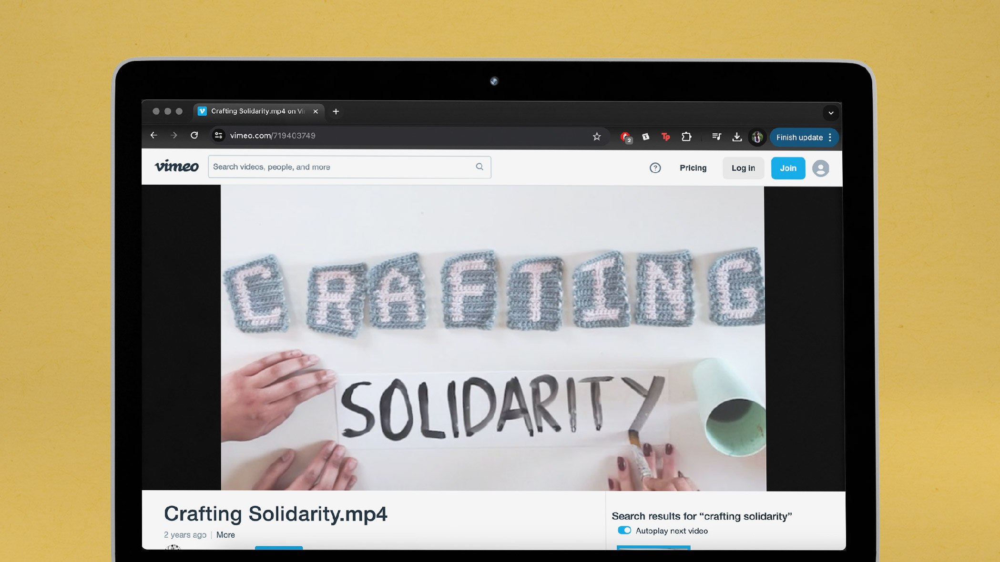

Crafting Solidarity
Student Project, 2022
A film project with the theme "Care". To me care is the community my friends and I had built through Visual Society. This was a craft society we founded during our days at UAL where we would meet once a week to teach our members various craft activities. Some examples would be crochet, book binding, acrylic pouring, and lino printing. Through these sessions we made new friends and had a good break from our day-to-day routine.
The clips from this film were recorded during multiple Visual Society workshops where I also interviewed our members to ask them their thoughts on joining our little group and why they did so.
Process Journal
click to view
